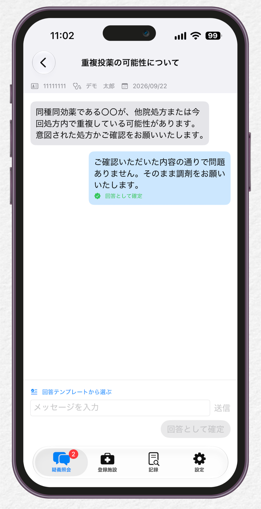
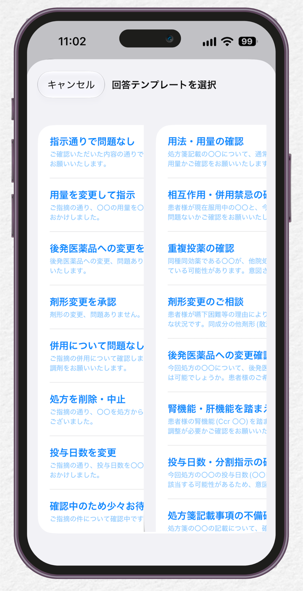
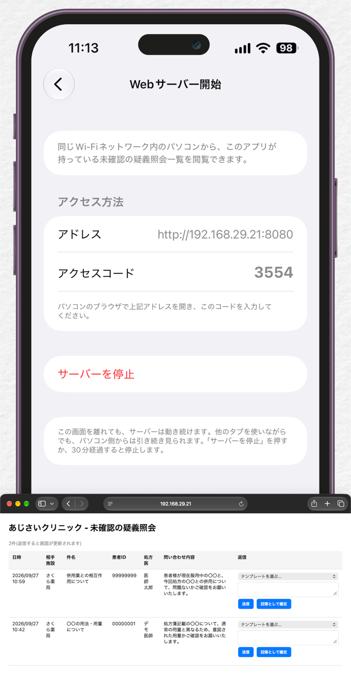

RxConfirm
操作マニュアル
最終更新日: 2026年11月8日
RxConfirmは、薬局と医療機関のあいだの疑義照会を、電話の代わりにiPhoneアプリで行うためのツールです。
このマニュアルでは、画面を見ながら基本の操作を説明します。
ご不明な点は、よくある質問(FAQ)もご覧ください。
1. はじめに
薬局が疑義照会を送り、医療機関が返信するか「回答として確定」します。
やり取りはスレッド形式で、連携した施設どうしだけが見られます。
- 施設を登録します(薬局または医療機関を選びます)。
- 連携したい相手施設に、6桁の招待コードを伝えます。コードの有効期限は10分です。
- 相手が承認すると連携が完了し、疑義照会のやり取りを始められます。
画面の下に4つのタブがあります。「疑義照会」(やり取り)、「登録施設」(連携先)、「記録」(月次PDF)、「設定」です。
2. 疑義照会の一覧
「疑義照会」タブで、やり取り中の問い合わせを確認します。開いた直後は「未確認」が表示されます。
- 切り替え: 「未確認」「確認済み」をタップして切り替えます。
- 検索: 上部の検索欄で、施設名・件名・患者ID・処方医を検索できます。
- 行の表示: 相手施設名、件名、最終時刻、患者ID・処方医・処方日が並びます。タップするとスレッドが開きます。
- 未確認の目印: オレンジの点が未確認です。30分を超えると、赤い「◯分経過」の表示に変わります。
- バッジ: 「疑義照会」タブとアプリアイコンに、未確認の件数が赤い数字で表示されます。
- 新規作成: 右上の編集アイコンから、新しい疑義照会を作成します。
3. 疑義照会を送る(薬局)
新規作成では、処方箋の2次元バーコード(QRコード)を読み取って、処方情報を入力欄に反映できます。
- 「QRコードを読み取る」を開き、枠の中に処方箋のQRコードを収めます。
- QRコードが複数に分かれている場合は、すべて読み取ります。画面下の「検出済み」に件数が出ます。
- 「読み取りを完了」を押し、入力内容を確認します。
- 件名と本文を入力して送信します。本文は「テンプレートから選ぶ」でひな形を選べます。
読み取れない場合は、患者ID・処方医・処方日を手で入力しても、同じ流れで送れます。処方日の初期値は今日の日付です。
患者の氏名と生年月日は、サーバーに送られません。
4. 返信と「回答として確定」
スレッド画面の上部に、患者ID・処方医・処方日が表示されます。下の入力欄からメッセージを送ります。

スレッド画面(回答として確定済み)
| 操作 | できる人 | 結果 |
|---|
| 送信 | 薬局・医療機関 | やり取りの途中として記録されます。確認済みにはなりません。 |
| 回答として確定 | 医療機関のみ | 正式な回答として記録され、確認済みになります。 |
確定したメッセージには、緑色のマークと「回答として確定」の文字が付きます。
医療機関では、入力欄に文字を入れると「回答として確定」ボタンが押せるようになります。
医療機関として登録した施設では、病院側から問い合わせを作成した場合でも確定できます。
5. 回答テンプレート(医療機関)
医療機関では、スレッド画面の「回答テンプレートから選ぶ」をタップすると、よく使う回答文を一覧から選べます。
選んだ文章は入力欄に入るので、必要に応じて書き換えてから送信します。
薬局側の問い合わせ用テンプレート(8種類)とは別に、回答用が9種類あります。

回答テンプレートの選択画面
電話で確認・回答した件は、「電話で対応済み」を選んで「回答として確定」を押します。
未確認の一覧から外れ、記録にも残ります。
6. パソコンのブラウザから回答する(Webサーバー)
診療中にパソコンを使っている医師や事務の方向けの機能です。
iPhoneのアプリを一時的にWebサーバーにして、同じWi-Fiのパソコンから未確認の疑義照会を確認・返信します。

Webサーバー画面とパソコンのブラウザ画面
- iPhoneの「Webサーバー」タブで、サーバーを開始します。
- 画面に表示される「アドレス」と、4桁の「アクセスコード」を確認します。
- 同じWi-Fiにつながったパソコンのブラウザでアドレスを開き、アクセスコードを入力します。
- 未確認の一覧(日時・相手施設・件名・患者ID・処方医・問い合わせ内容)が表示されます。テンプレートを選んで「送信」または「回答として確定」を押します。
- 終わったら「サーバーを停止」を押します。開始から30分たつと、自動で停止します。
アドレスは、アプリの画面に表示されたとおりに入力してください(画面例とは異なる場合があります)。
アクセスコードは、起動のたびに変わります。サーバーは、他のタブを使っている間も動き続けます。
7. 記録と月次PDF
「記録」タブでは、疑義照会の件数を確認し、月ごとのPDFを作れます。
- サマリー: 今月の疑義照会、累計、未確認、確認済みの件数が表示されます。
- 月次記録の出力: 「<」「>」で月を選び、「この月のPDFを作成」を押します。ファイル名は「疑義照会_2026年9月.pdf」の形式です。
- PDFの内容: A4で、問い合わせ内容と回答が1件ずつまとまります。
- 相手施設ごとの件数: 累計の件数が施設別に並びます。
8. ご利用にあたって
- 本アプリは、疑義照会の記録・伝達を支援するツールです。医学的な診断や治療方針の決定は行いません。治療方針は、必ず医師にご相談のうえ判断してください。
- 未確認が15分続くと、1回だけリマインド通知が届きます。それでも反応がないときは、電話に切り替えてください。
- 患者IDの取り扱いと患者への説明は、各施設の個人情報保護方針にしたがって行ってください。
- アカウントを削除しても、相手施設と共有したやり取りの記録は残ります。
- 料金は無料です。
導入前の確認事項は、運用チェックリストにまとめています。
お問い合わせ: sysdev@nagato.or.jp